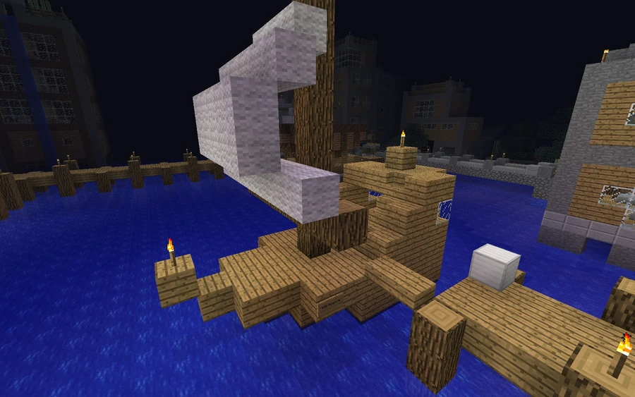

BVS Mexicoke
A small abandoned vessel in Broville Bay, associated with an old smuggling operation and a satirical census about maritime safety.
The bay’s smallest vessel
The BVS Mexicoke is described as the smallest boat in Broville Bay and as having been abandoned for several years. It is also called the “Coke boat”. Its poor reputation appears both in petitions for demolition and in the nickname “the lamest ship in the bay”.



Smuggling and abandonment
The community history places its use for drug smuggling in Broville’s early days, satirically linking the arrival of hipsters with increased demand. The boat is said to have served as a drug runner for more than two years before a successful BVPD raid arrested a ring of smugglers.
The vessel was due to be destroyed, but the paperwork discouraged the officer responsible. Repeated delays ended with the boat being condemned, after which it became a home for people with alcoholism who had been evicted from their houses.
The 2010 BroCensus
Question 79A of the 2010 BroCensus asked: “If Broville had, theoretically, been found to have avoided many national maritime safety laws, which ship in the bay would you scuttle first?” According to the narrative, the overwhelming answer was “BVS Mexicoke/Coke boat”. The episode is a joke about the vessel’s reputation, rather than a record of its sinking.
See also
Sources and references
- v11.4.4 maps, signs, books and items World records
- BVS Mexicoke · Broville Wiki Community archive
Text adapted and expanded from BVS Mexicoke (contributors and history, revision 4372). Adapted text is available under CC BY-SA 3.0.